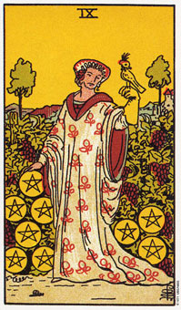

【关键词】 富足 成功 信心 享受 自律
一位有悠闲的妇女在花园里散步，气质贤淑温文尔雅的她，垂着的右手下是几枚放着的金币，象征着一切物质面的东西。图中可见她左背上立着一只听命于他的猎鹰。猎鹰是生活中一切黑暗粗鲁东西的象征。表明妇人已经成功地控制住了，不再为冲动和欲望所动。
推测：星币九在推测中含义丰富。有时候纪律和自控的象征，有时暗示推测者放弃一切尘世中低俗下流不文明的东西，有所节制。此牌正放和倒放差别放大。
星币九画了一个女人，被她辛勤耕耘得到的果实所围绕。她的右手停放在几颗星币上，大拇指扶着一串葡萄。一只带着头罩的小鸟栖在她的左手上。在她为小鸟移开头罩巾后，它便可以得到自由。然而小鸟一旦还带着罩巾，还是会乖乖的服从她。
这女人的服饰暗示她物质生活的优渥。她脸上有一种宁静沉着的表情，而晴朗的天则是预测持续的成功，因为她安详自在的置身于大自然当中。从王牌的开始，到二的下决定，三的学习，四的报偿，五改变的讯号，表示责任的六，重新评估的七，以及进一步承诺的八，现在我们到达了收获的9。
她成功并非偶然，透过承诺、劳动、纪律、学习以及重新评估，它已经稳固的建立起某种具体的事物，并且也为将来打下良好的根基。她投入生活，并与它密不可分。经由谨慎的规划基对目标的不断投入，她掌控了周遭的一切。
大体上的意义
星币的9是一张代表自信或自我依赖的牌，那可说是要达到超凡成就的必要条件。你的自信如果在搭配上自律的话，那将使你在许多层面上获益。
在牌面上如果9出现在女皇旁边的话，可能暗示者怀孕。而在健康、事业或两性关系的分析当中，9所代表的是稳操胜券。
正位含义：
1.有一定眼光，懂得选择，为人激赏。
2.知蓄财的必要，生活中精打细算，但不吝啬。
3.能持续不中断地为自己创造有利条件，是个实践家，最恨口头主义者。
4.能取得一定的成就。
5.晓得最安全的形式方式。
逆位含义：
1.不取信用，为人厌恶，一时改不掉。
2.计划终止，前功尽弃。
3.没有治理能力
4.由于失去信用而失去财产。
5.失窃。
两性关系上的意义
星币九代表一种舒适而成功的两性关系，物质上的成功让你有余裕去追求个人的兴趣及目标。财务独立和物质的目标应该是这段关系的重点。只要你一直保持稳固，许多事物都可以因刃而解。
牌中所画的小鸟带着头罩，因此它失去许多自由。这女人同样失去她的某些自由，然而她知道这便是获得成功的代价。自律所要求的选择，有时候会强迫你放弃某些事物，诸如自发性。
倒立的星币九
星币九的倒立暗示由于缺乏自律而无法成功。它意味没有办法把一件事情从头做到完成。你想要不劳而获。
一般而言，9的倒立是描述放了太多的精力于错误的事情上面。例如，一个芭蕾舞者花太多时间在饭店当服务生，以致没有时间、精力或热情去从事他的舞蹈工作。
星币九的倒立显示耕耘太多而收获太少，或没有足够的钱好享受所追寻的生活形态。这是你回到八的课题上，带着爱去工作，或回到七去反省过去的行为，并决定出最好的行动模式。
它也可能意味着，在一件事情之后你又开始另一件，但是却没有完成任何事情。你不让所栽植的种子有时间结出果实。在事业的分析上，9的倒立可能意味一份连夜晚或周末都要上班的工作，或非正常时间上下班，或工作时数太长了。
星币九的倒立也可能暗示着怀孕，却没有完成它的周期，也就是说，堕胎或者流产。不过如果你已经有了八或9个月的身孕，可能暗示生产。